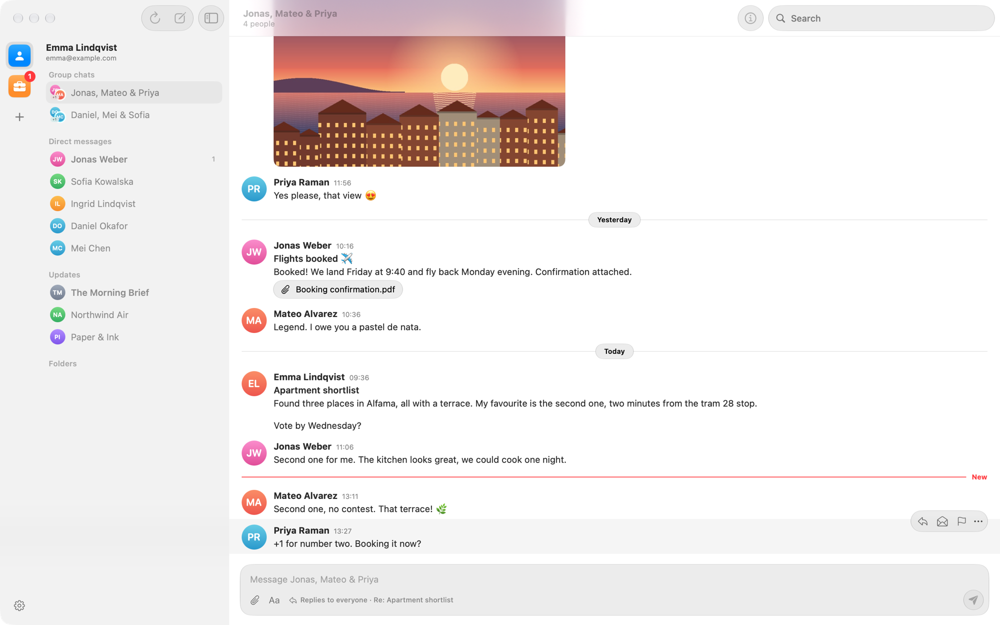
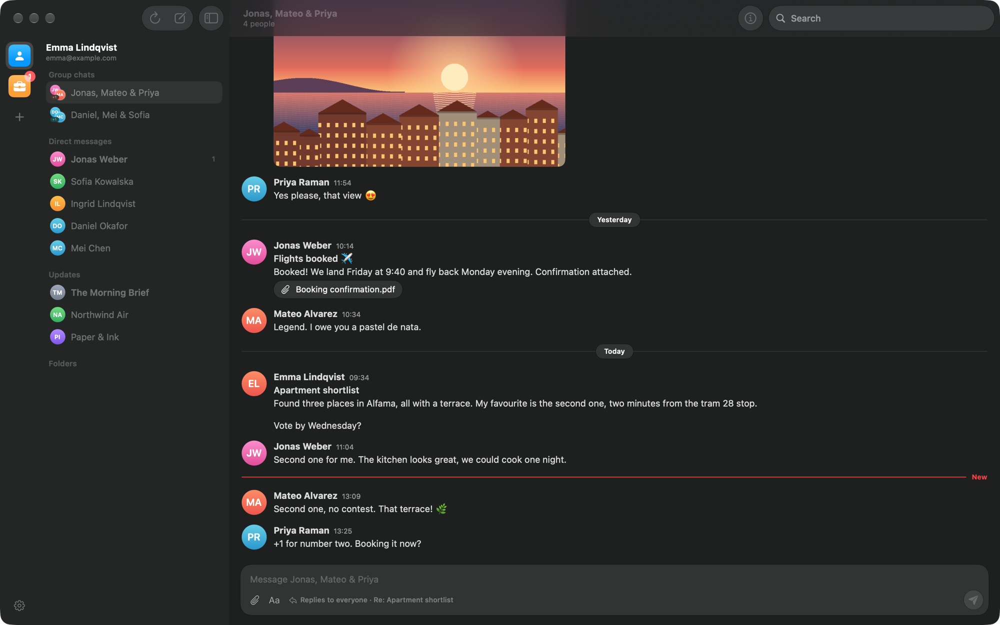
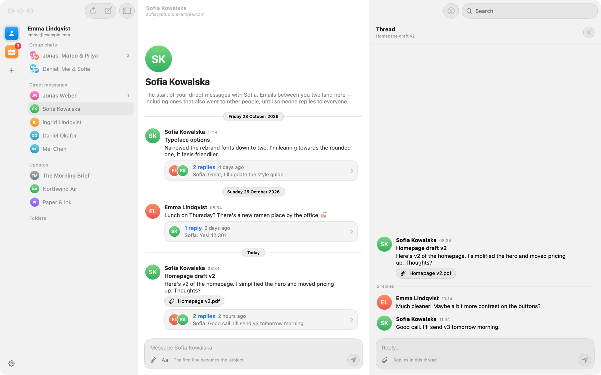
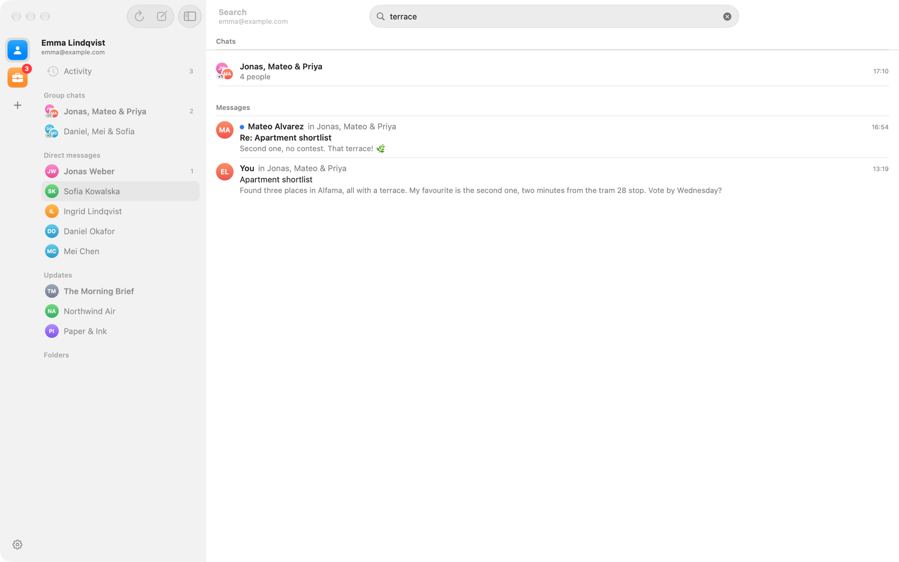

qMail
Email that reads like a chat. A native Mac mail app that turns your inbox into Slack-style conversations.
Free and open source · macOS 26 Tahoe or later · Signed and notarized by Apple


Your inbox, as conversations
qMail is an email client for macOS. It works with Gmail, iCloud, Fastmail, Yahoo and any IMAP account, and it shows each email inside a chat with the people on it, like Slack.
Chats instead of an inbox
Direct messages, group chats and Updates (newsletters and notifications) in the sidebar. An email and its replies form a thread.
Clean messages
Quoted text, “On … wrote:” headers and signatures are stripped, so you read what people actually wrote. Photos show inline.
Reply in place
Type at the bottom of a chat to email everyone in it. People who don't use qMail just get normal email.
Activity
Every email in one list, newest first, when you'd rather see everything in order.
Search everything
A full-text index of your whole mailbox, kept on your Mac. Search ignores case and accents.
Private by design
No qMail servers, no account, no tracking. Remote images in emails are blocked until you load them.


Using qMail with a Google account
To add a Gmail or Google Workspace account, choose Sign in with Google. Google asks whether you allow qMail to access your mail; qMail never sees your Google password.
On Google's sign-in and permission screens, and in your Google Account's list of connected apps, qMail appears as qbitMail.
| Permission | What qMail does with it |
|---|---|
https://mail.google.com/Read, compose, send and delete email | Connects to Gmail over IMAP and SMTP, the standard mail protocols, to download your email, show it as chats, search it, and send, move, archive or delete messages when you ask it to. |
openid, email, profile | Reads your name and email address to set up the account in qMail and to put your name on email you send. |
Your email goes directly between your Mac and Google. qMail has no servers of its own: messages, the search index and your sign-in tokens are stored only on your Mac (tokens in the macOS Keychain), and nothing is sent to the developer or to anyone else. Read the full Privacy Policy.
qMail's use and transfer to any other app of information received from Google APIs will adhere to the Google API Services User Data Policy, including the Limited Use requirements.
You can remove an account in qMail › Settings › Accounts, which deletes everything qMail stored for it, and you can revoke qMail's access at any time at myaccount.google.com/permissions.
Get qMail
Download qMail-x.y.dmg from the latest release, open it and drag qMail to Applications. After that, qMail keeps itself up to date.